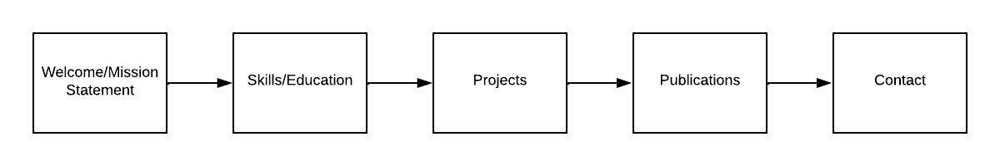

Project Design
Project Overview:
For this project I would be making a resume website for my client in order for them to promote themselves to possible employers.
Since my client is looking to work in academia, the potential users of the website would be research universities.
The website will contain information about my client, including: Mission statement, publications, projects they're working on, as well as their contact information.
Client Information:
My client will be an individual outside of the class
- Name: April Song
- Purpose: To promote client to potential employers.
- Email: Yuanyuan.Song@uga.edu
Site Layout:
Home/Welcome Statement
This page will include the client's welcome statement along with their mission statement. Letting potential employers know who they are and what their interests include.
Skills/Education
This page will include the client's education as well as their skill set.
Projects
Since the client is pursuing a poisiton in academia, listing their past and current projects will be very beneficial.
Publications
Again, since the client is looking to work in academia, specifically doing research, their past publications are of major importance to the potential employers.
Contact
The contact page will include all of the client's socials. Such as LinkedIn, university profiles, etc. It will also contain an "email me" form. Which will allow users of the site to contact the client directly from the website.